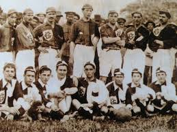

fútbol colombiano tiene una rica y apasionante historia que refleja tanto la evolución del deporte en el país como su impacto cultural y social. Fue introducido en Colombia a principios del siglo XX, especialmente en la región caribeña, por marineros británicos y trabajadores extranjeros. Con el tiempo, se extendió rápidamente a otras regiones del país, convirtiéndose en uno de los deportes más populares.
El primer club de fútbol colombiano reconocido oficialmente fue el Barranquilla Fútbol Club, fundado en 1909. A partir de ahí, el fútbol fue ganando popularidad en otras regiones del país, especialmente en Bogotá, Medellín y Cali. En 1948, se creó la Dimayor (División Mayor del Fútbol Colombiano) y con ella, la primera liga profesional del país. El torneo inaugural fue ganado por Independiente Santa Fe.
La creación de la Dimayor en 1948 fue un hito importante en el fútbol colombiano. La Dimayor es la organización encargada de regular y promover el fútbol profesional en Colombia, y es reconocida como la primera liga de fútbol profesional en América Latina.
La Dimayor fue fundada por un grupo de clubes de fútbol de diferentes regiones del país, y desde entonces ha sido responsable de organizar y supervisar el torneo de primera división, así como de promover el fútbol en Colombia a nivel nacional e internacional.
